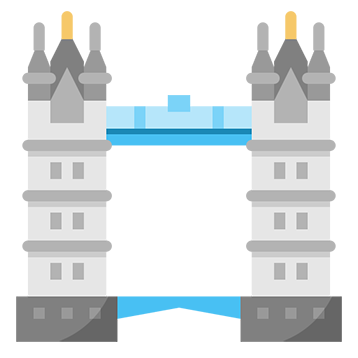
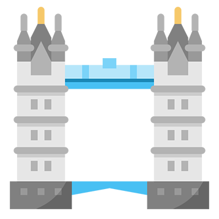

I'm Awa,
a Web Developer


I am a Web Developer based in East London. I ❤️ designing appealing and functional websites.
While I was Office Adminsitrator for a charity, I enjoyed working with the website team. I wanted to know more about Web Development. This is how my journey started. Over time, I have gained a wealth of experience designing and developing mobile and web applications.
One of my other skills are sewing and knitting. I love designing patterns and being able to create something with my own hands!